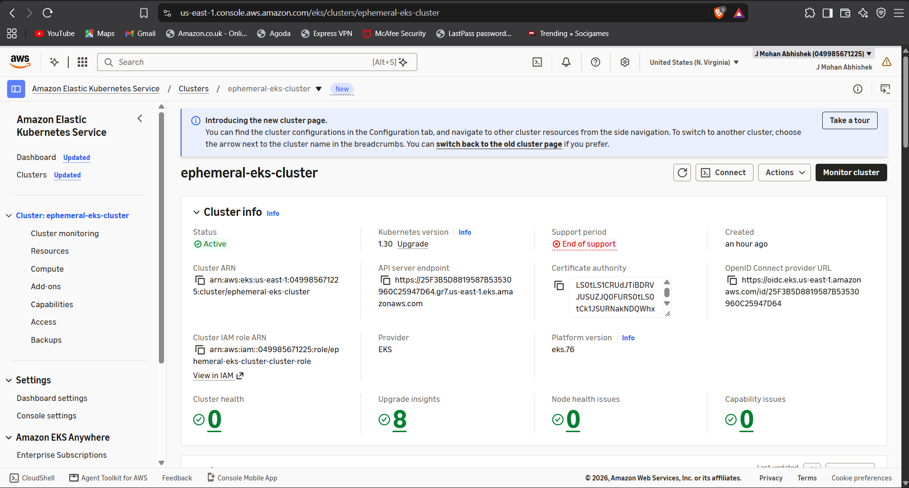
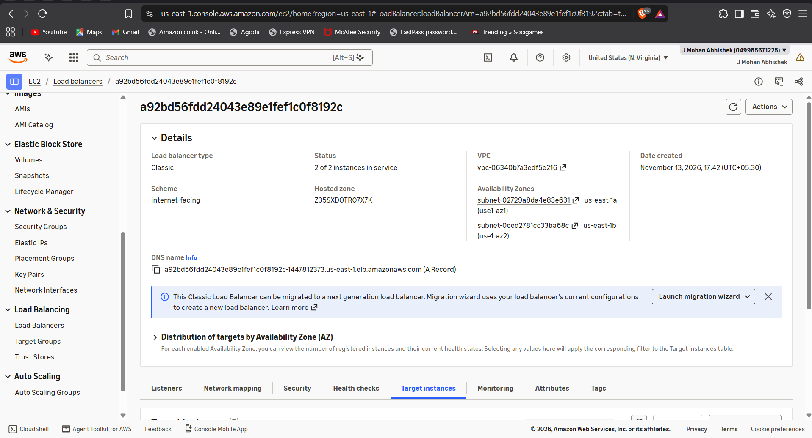
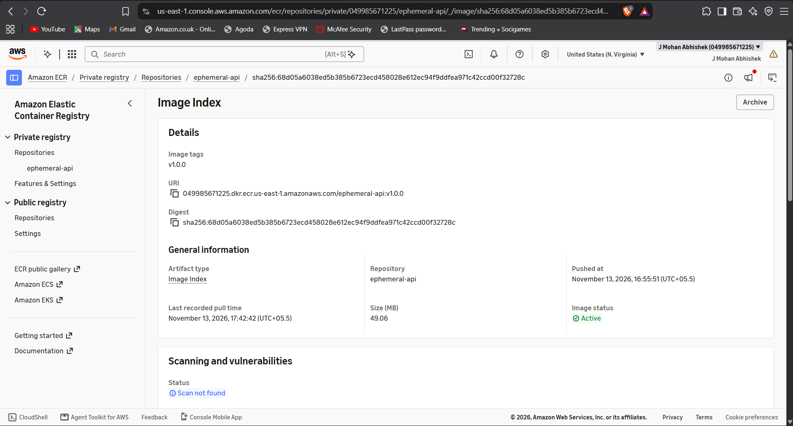

Next-Gen Microservices on
AWS Elastic Kubernetes Service
An enterprise multi-AZ Kubernetes architecture provisioned by Terraform, engineered for zero downtime rolling updates, and destroyed on-demand to achieve 99.8% cloud cost reduction.
AWS EKS Topology & Bento Explorer
Click any architecture block below to inspect its subnets, security policies, and resource configurations.
Custom Multi-AZ Amazon VPC
Provisions CIDR block 10.0.0.0/16 across us-east-1a and us-east-1b. Includes 2 public subnets for load balancers and 2 isolated private subnets for EKS worker nodes.
Traffic Balancing & Pod Failover Simulator
Experience Kubernetes self-healing and high availability right inside your browser.
Watch incoming traffic distribute across Pod-A and Pod-B. Simulate a real-world crash by killing Pod-A to observe automatic zero-downtime failover!
FinOps Cloud Spend & Burn Rate Calculator
Calculate exact cost savings of ephemeral on-demand destruction.
AWS Management Console Proof Gallery
Real-time snapshots captured during the live deployment in AWS region us-east-1.






Automated Lifecycle Execution Playbook
Declarative terminal commands to replicate and cleanly destroy this architecture.